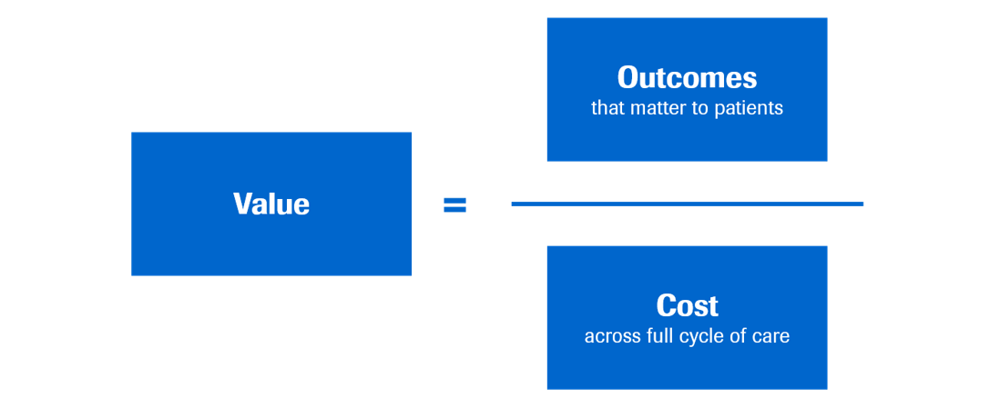
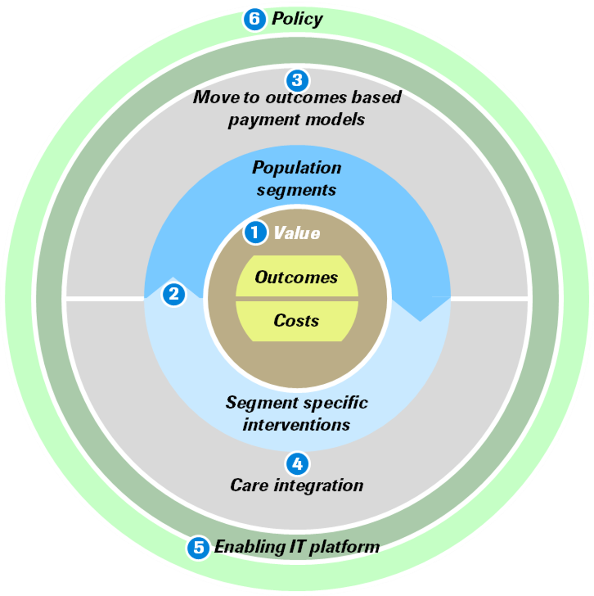
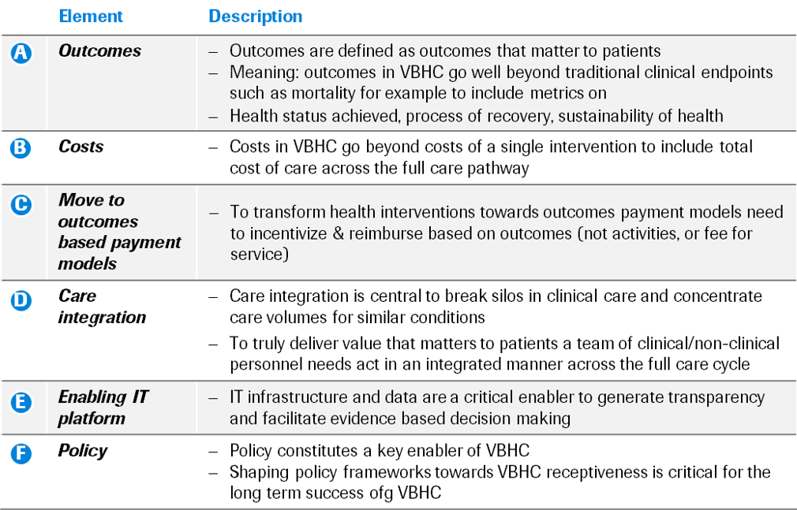

Description
Value-Based HealthCare (VBHC) is proposed as a sustainable model, shifting the incentive away from
treatment volume towards value for patients, providers and healthcare systems.
VBHC focuses on the outcomes that matter to patients.

To learn more, check out the “Value-Based HealthCare” module from the PHC Pharma Starter Pack.
Why it is important
VBHC aligns with Roche’s core focus on what patients need. This model would ensure that outcomes
that matter to patients are prioritized. In this way, we will be a real healthcare partner and
deliver value to our patients beyond just treatment and medication, from timely diagnoses to tangible,
long-term health results.
VBHC will present new healthcare service partnership opportunities to Roche, allowing us to expand and
improve our offerings. Incorporating VBHC into our ways of working is an innovative step that will
differentiate ourselves.
Emerging technologies are now making the implementation of VBHC possible on a wider scale. Most
importantly, Meaningful Data at Scale (MDAS) will allow Roche to use analytics to inform our healthcare
offerings. We can use data in predictive models to anticipate the outcomes associated with different care
cycles, reducing the level of risk for patients, healthcare systems, and payers.
Value-Based HealthCare is an important transition in healthcare where we can realize our PHC vision. By
partnering and co-creating with our internal and external stakeholders, we can contribute to building
sustainable healthcare systems.
Key drivers/considerations
IT platform, Meaningful Data at Scale (MDAS), and policy all play a key role in enabling our success for implementing Value-Based HealthCare.We require a robust IT infrastructure that enables patient data to be shared optimally, across borders and services.Our IT platform must be able to collect MDAS to inform our analyses and algorithms. A rigorous approach to data analysis is essential to implementing VBHC.Well-designed, clear policies are another crucial component of rolling out our VBHC. We need to minimize regulatory hurdles and ensure that we are able to analyze patients and segment data effectively and responsibly.
Our VBHC@Roche framework
Our program is structured to generate insights across key dimensions of our VBHC framework.

